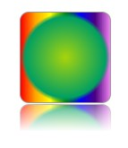

Background?Background还能怎么玩？
创意往往蕴含在最简单的东西里面，下面我们看看background如何玩出创意火花。
背景透明渐变

使用一个简单的渐变属性，这里不过多赘述。

倒影和渐变的进阶玩法

这里使用reflect来做出倒影，使用多重渐变背景来画出不同的渐变背景，再用一个伪类来画出中心的圆。这只是一个演示效果，但是假如我们知道背景渐变和倒影，还有上一节的阴影可以这么用，那还有什么好玩的东西是我们做不出来的。

背景的圆心渐变
背景的圆心渐变不只可以做出一层渐变，利用多层背景的特性可以做出这种多个圆作为背景的background属性。
利用背景渐变我们可以？
上面这个图就是利用背景渐变做出来的。你可能猜到这是用两个渐变透明div覆盖在整个列表上，很自然而然会出现一个无法点击的问题。加上pointer-events:none; 这个效果就可以用纯CSS完美实现出来同时兼顾可用性。